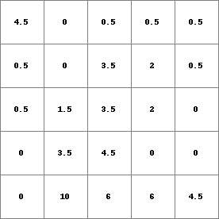
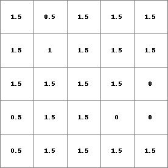
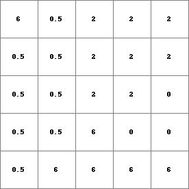
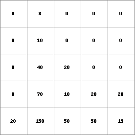
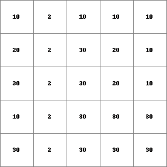
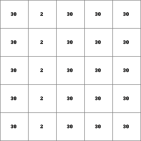

accucapacityflux, accucapacitystate¶
accucapacityflux, accucapacitystate
Transport of material downstream over a local drain direction network
Resultflux = accucapacityflux(ldd, material, transportcapacity)
Resultstate = accucapacitystate(ldd, material, transportcapacity)
Resultflux Resultstate = accucapacityflux, accucapacitystate(ldd, material, transportcapacity)
- material
- spatial, non spatial scalar
- ldd
- spatial ldd
- transportcapacity
- spatial, non spatial scalar
- Resultflux
- spatial scalar
- Resultstate
- spatial scalar
Operation¶
These operations describe accumulation of material in a drainage network with a limited transport capacity of the drainage channel. For instance, when water is flowing through pipes or when sediment is transported whereby the transport is limited by the water velocity and thus transport capacity. The material that is not transported is stored. For each cell, accucapacityflux assigns the amount of material which is transported out of the cell, accucapacitystate assigns the amount which is stored in the cell. Both operators perform the same function of accumulation of material with a limited transport capacity, the only difference between the operators is the sort of result that is saved: accucapacitystate yields storages of material in cells, accucapacityflux yields fluxes of material out of cells.
For each cell, the amount of material input, for instance the amount of rain, is given by material. This is transported in downstream direction through the consecutively neighbouring downstream cells, following the local drain directions on ldd. Each time material moves through a cell a fraction is stored in the cell. These storages are saved as Resultstate, if the accucapacitystate operator is used. The remaining material is transported out of the cell, these amounts of outflow from each cell into its neighbouring downstream cell are the result of the accucapacityflux operator, they are saved as Resultflux.
The function can be described by flow of material through a set of linked systems, where a cell represents a system. The flow starts at the cells/systems at the watershed boundaries (defined by ldd) and ends at a pit cell. The systems are linked by the local drain directions on ldd, these define the path of flow through the set of cells/systems. Each time a system is passed, the amount of flow changes.
For a cell/system somewhere in the map, the flow of material is described by a system. The inflow of the cell is the sum of the outflow amounts of its upstream neighbours. This inflow amount is added to the material value in the cell itself. This amount of material is potentially available for transport out of the cell. The amount which is actually transported out of the cell is limited by the transportcapacity value of the cell: if the sum of material is larger than the transportcapacity value, the amount of material which is transported out of the cell is equal to the transportcapacity value, the remaining material is stored in the cell. If the sum of material is equal to or smaller than the transportcapacity value, all material is transported out of the cell and nothing will be stored in the cell.
For each cell, the amount of material which is transported to its downstream neighbour (or out of the map if the cell is a pit cell) is saved as Resultflux (use the operator accucapacityflux); the amount of material which is stored to the cell is saved as Resultstate (use accucapacitystate)
Notes¶
The values on material and transportcapacity must be equal to or larger than zero.
A cell with missing value on material and/or transportcapacity is assigned a missing value on Resultflux or Resultstate. Additionally, all its downstream cells are assigned a missing value.
The local drain direction network on ldd must be sound.
Group¶
This operation belongs to the group of Neighbourhood operators; local drain directions
See Also¶
Examples¶
- • pcrcalcbindingState1 = State1.map;Flux1 = Flux1.map;Ldd = Ldd.map;Material = Material.map;initialreport State1, Flux1 = accucapacitystate,accucapacityflux(Ldd,Material,1.5);• pythonLdd = readmap(“Ldd.map”)Material = readmap(“Material.map”)State1 = accucapacitystate(Ldd,Material,1.5)Flux1 = accucapacityflux(Ldd,Material,1.5)
State1.map Flux1.map Ldd.map Material.map   
 - • pcrcalcbindingState2 = State2.map;Flux2 = Flux2.map;Ldd = Ldd.map;Material = Material.map;TransCap = TransCap.map;initialreport State2, Flux2 = accucapacitystate,accucapacityflux(Ldd,Material,TransCap);• pythonLdd = readmap(“Ldd.map”)Material = readmap(“Material.map”)TransCap = readmap(“TransCap.map”)State2 = accucapacitystate(Ldd,Material,TransCap)Flux2 = accucapacityflux(Ldd,Material,TransCap)
State2.map Flux2.map Ldd.map Material.map TransCap.map  

